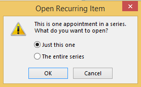

Create a Recurring Meeting
The recurrence pattern of a meeting cannot be changed once the reservation has been created. If the recurrence pattern needs to be changed, delete the entire reservation and create a new recurring meeting series.
The recurrence pattern of a meeting is created in Microsoft Outlook. The recurring pattern will be viewed in the ‘MeetingPlanner for Outlook’ reservation window. All resources are reserved with the recurring series through MP6.
- Create a recurring meeting in Outlook.
- Launch the MP6 tool.
- Enter search parameter criteria and Reserve room.
- Reserve additional resource reservations to attach to the entire recurring meeting as desired.
- Select Save & Close.
Add Room to Single Occurrence of Recurring Meeting Series
- Select the desired recurring meeting from the Outlook Calendar.
- Enable just this one and OK.
- Launch the MP6 tool to open the single occurrence.
- Select Add room.
- Enter search parameter criteria and Reserve room.
- Reserve additional resource reservations to attach to the meeting as desired.
- Select Save & Close.
Add Room to Entire Recurring Series
- Select any one of the occurrence dates from the series.
- Enable the entire series and OK.

- Launch the MP6 tool to open the entire series.
- Select Add room.
- Enter search parameter criteria and Reserve room.
- Reserve additional resource reservations to attach to the series as desired.
- Select Save & Close.